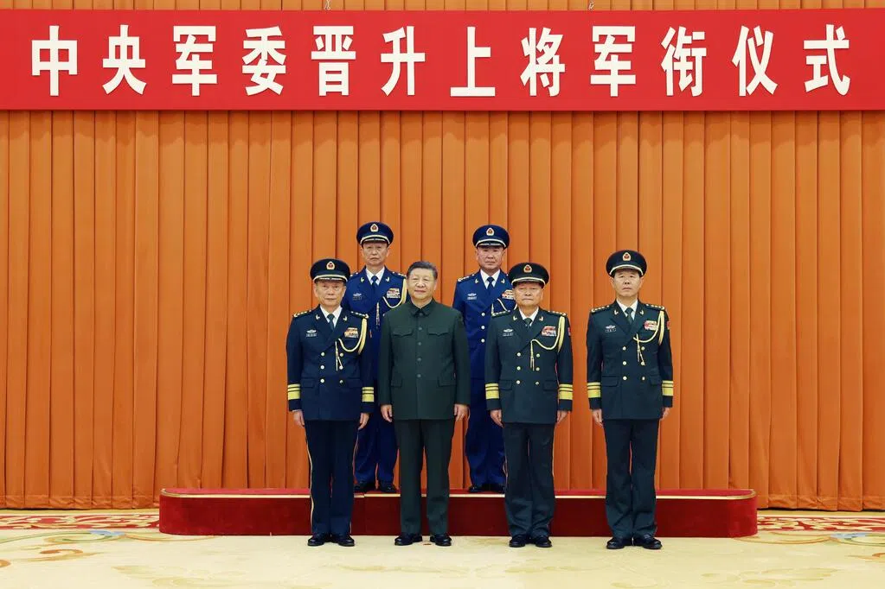

世界苦茶12月23日新闻 | 33条 | 解放军东部中部战区司令晋升上将

解放军东部中部战区司令晋升上将 | 山东核查公务员社交账号言论 | 美全面封杀大疆及外国无人机 | 英伟达H200拟春节前发货中国 | 中欧爆发乳制品反补贴贸易战 | 俄总参高官莫斯科遭炸弹身亡
苦茶数据
美元兑人民币：7.02（昨日7.03，前日7.03）
美元兑日元：156.27（昨日157.45，前日157.49）
上证指数：3930（昨日3916，前日3890）
标普500指数：6878（昨日6834，前日6829）
比特币：88215（昨日88723，前日88233）
布伦特原油：62.07（昨日60.94，前日60.47）
中国新闻
• 解放军今年首次晋升上将 东部中部战区司令员获提拔。
中国解放军东部战区司令员杨志斌和中部战区司令员韩胜延晋升上将。在解放军高层反腐持续升级的大背景下，这是中共中央军委今年第一次举行晋升上将军衔仪式，2023年和2024年分别举行四次和三次。受访学者分析，军中反腐加剧加上苗华、何卫东等人大案，让中共高层在高级将领人事安排上十分谨慎。先提拔东部和中部战区司令员主要因现实需要，前者应对台海和东海，特别是当下中日关系较紧张；后者则负责首都北京的防卫。杨志斌和韩胜延都是空军出身，说明空军是受腐败窝案牵连较少的军种。新华社报道，中共中央军委晋升上将军衔仪式，星期一上午在北京八一大楼举行。中共总书记、中央军委主席习近平出席晋衔仪式。（翻评：政治信号意味非常强烈。）
• 山东核查新录用公务员网络社交平台言论。
中国官媒刊文透露，山东在新录用公务员考察中，将联合网信、公安等部门，核查重点人员网络社交平台言论，深入了解“人前人后”“网上网下”真实表现，以甄别政治不合格人员。由中国人力资源和社会保障部主管的《中国组织人事报》，上个星期三在头版刊登题为《山东严把新录用公务员政治首关 区分不同群体差异化考察》的署名文章，透露上述消息。文章先是肯定，山东近年坚持把政治标准摆在首位，着力细化考察指标、优化考察流程、强化结果运用，推动新录用公务员政治素质考察落地见效、走深走实，切实把好选人用人政治关。文章举例，当地出台的《山东省公务员录用考察办法》，明确七类严重违反政治纪律和政治规矩等不予录用的负面清单。
• 纽约州长前高级助理被控为中国代理人一案宣判无效。
在一宗备受关注的案件中，前纽约高官、被控为中国代理人的审判因陪审团无法就所有19项指控达成一致而宣布无效。前州长霍楚尔的前副办公厅主任孙琳达在陪审团在19项指控上僵持不下、无法作出裁决后获释。检察官亚历山大·所罗门周一在法庭上表示，政府希望尽快对这对夫妇重新提起公诉。
• 美国禁止批准中国大疆的新型号及所有其他外国无人机。
美国将中国大疆及所有其他外国产无人机新型号加入黑名单，联邦通信委员会此举不影响现有大疆机型，是华盛顿加大打击中国无人机行动的重要升级。纳入联邦通信委员会的“受管清单”意味着占美国商业无人机市场过半的大疆将无法获得在美国销售新机型或零部件的批准。联邦通信委员会表示，其将所有外国产无人机及组件加入黑名单，这也将影响另一家总部位于深圳的重要无人机制造商奥特尔。该电信监管机构指出，此决定是在周日收到白宫召集的跨部门审查外国产无人机所带风险结果后作出的。大疆周一在一份声明中表示对该决定“感到失望”，并指出“尚未公布行政部门在做出决定时所依据的信息”。
• 北京“坚决反对”日本议员访台之行，正值中日关系紧张之际。
北京表示，日本议员访台“严重违反”双边关系的政治基础。据台湾中央社报道，总计约有30名日本议员计划在今年年底至明年初期间访问该岛。三名执政党自民党议员——前日本法务大臣Keisuke Suzuki、曾任前首相石破茂特别顾问的Akihisa Nagashima，以及前法务副大臣Junichi Kanda——将于周一至周四访问台湾。此外，由自民党议员Hirofumi Takinami率领的五人日本代表团也在同期访问台湾。中国外交部发言人林间周一表示，北京已就日本议员的访台行程提出抗议。
• 中日紧张局势冲击假期旅客；46条航线的航班被取消。
航班管理应用Flight Manager显示，未来两周内包括热门旅游目的地在内的46条航线的航班被取消。所有被取消的航班均由中国航司执飞，涉及国内大部分主要航空公司。该应用显示，受影响的机场共计跨中日两国38座。这些大范围取消恰逢中国1月1日至3日的新年公休假期。大坂与名古屋是受影响严重的日本目的地之一；在被取消的46条航线中，有一半连接中国的二、三线城市——如沈阳、重庆和武汉——与日本主要旅游枢纽。自上海出发飞往日本一些较小城市的直飞航班——包括长崎、新潟和鹿儿岛——在接下来的两周内也被取消。
• 郑丽文敢敢讲出两岸立场 地方选战与绿营直球对决。
台湾最大在野党中国国民党主席郑丽文11月初就任后，积极奔走全台，并与第二在野民众党主席黄国昌会面，为两党合作铺路。同月底在基隆出席131年周年党庆活动时，郑丽文对2026年底的九合一地方选举掷出豪语：“要让国民党从台湾头赢到台湾尾。” 有丰富社会运动经验的郑丽文强悍敢言，战斗力十足，让保守的国民党迎来久违的入党潮。
• 明年1月1日起 向好友私发淫秽信息也违法。
2026年1月1日，中国新修订的《治安管理处罚法》将正式实施。其中第八十条明确规定：利用信息网络、电话以及其他通讯工具传播淫秽信息的，将面临十日以上十五日以下拘留，并处五千元以下罚款。如果传播的淫秽物品或信息中涉及未成年人，将依法从重处罚。在场景方面，新法删除了对传播场景的限制性表述，明确将利用信息网络传播淫秽信息的所有行为纳入规制范围。这意味着，无论是在数百人的大群中传播，还是在一对一的私人聊天中发送，无论是公开分享还是私密传递，只要实施了传播行为并被查证属实，公安均可依法启动行政处罚程序。
• 快手直播出现涉黄画面 直播频道紧急下架。
12月22日晚上，短视频平台快手直播中有大量主播竟然直播淫秽色情内容，甚至有主播直接在直播间暴露隐私部位。还有的主播则很会“吃流量”，在直播间要“老铁们刷礼物”，只要刷就 “脱” 但只是频繁做出要脱衣服的动作，并没有真的脱。而就在12月22日晚上23点30分左右，有网友录屏显示，快手直播频道页面中，有大量直播间在播放各种淫秽“小视频”。一直到12月23日0点，平台方面才“反应过来”，开始大规模处置，直播频道显示“服务器繁忙，请稍后重试”；其他短视频频道页面均正常，只有直播页面无法查看。截至发稿时，快手方面尚未回应此事。
印太新闻
• 泰国与柬埔寨将就停火举行会谈，外长表示。
泰国外交部长表示，随着致命的边境冲突进入第三周，泰国和柬埔寨官员将于下周会晤，讨论恢复停火的可能性。两国此前在7月签署了由美国总统唐纳德·特朗普斡旋的停火协议。但本月初冲突再次爆发，双方互相指责对方挑起战端。周一，两国高层在马来西亚的一次峰会上会面，这是自冲突复燃以来双方首次面对面会谈。会后，泰国外长西哈萨克·普昂凯克特科表示，7月的停火“有些仓促”，因为美国“希望在特朗普来访前签署声明”。“有时我们会匆忙，因为美国希望在特朗普总统访问之前签署，”西哈萨克说。
• 澳大利亚在邦迪枪击案后加快推动新的枪支与抗议法案，此举遭到批评。
澳大利亚在邦迪枪击案后加速通过新的枪支与抗议法案，此举遭到批评 澳大利亚民权团体和支持枪械者担心，邦迪枪击案后被加速推动的新法律将对枪支与抗议施加过度限制。周一，新南威尔士州召回议会审议一揽子新法案，包括禁止使用“将起义全球化”等措辞、限制个人持枪数量，以及扩大警方在抗议中的权力。新州州长克里斯·明斯表示，部分人可能觉得这些变化“走得太远”，但这些措施是为了保障社区安全。一位支持持枪的政治人物称这些法律不公平地针对守法枪主，而民权人士则认为对抗议的限制是对民主的侮辱。关于禁止“起义”措辞，明斯表示，该词在澳大利亚及全球的抗议中被用作“呼吁全球性起义，这就是它的含义。
科技新闻
• Waymo自动驾驶车辆在旧金山停电期间封堵道路并造成混乱。
周六大规模停电期间，Waymo的多辆自动驾驶汽车阻塞了旧金山街道，迫使公司暂时暂停服务，这引发了对这些车辆在真实道路条件下适应能力的质疑。社交媒体用户发布的视频显示，Waymo车辆在遇到熄灭的红绿灯时出现问题。一些车辆开启危险报警灯并突然停在原地，未能穿越路口；另一些则停在路口中央，迫使其他车辆绕行。官员称，此次停电由一个变电站发生火灾引起，影响了旧金山13万户家庭和企业，几乎占太平洋煤气电力公司服务客户的三分之一。周一，该公用事业公司仍在努力为数千名客户恢复供电。Waymo在旧金山运营数百辆机器人出租车。
• 特朗普政府暂停新英格兰、纽约和弗吉尼亚近海的风电项目。
特朗普政府暂停新英格兰、纽约和弗吉尼亚沿海的风电项目 华盛顿——周一，特朗普政府表示，鉴于五个正在东海岸建设的大型海上风电项目被五角大楼认定存在国家安全风险，已暂停这些项目的租赁。该暂停立即生效，是政府在打击可再生能源、削弱海上风电方面采取的最新措施。这一决定作出两周后，一名联邦法官裁定总统唐纳德·特朗普禁止风能项目的行政命令违法并予以撤销。政府称，此次暂停将为负责海上风电事务的内政部争取时间，与国防部及其他机构合作，评估并寻求可能的风险缓解措施。
• 日本新旗舰H3火箭未能将地理定位卫星送入轨道。
日本宇宙航空研究开发机构表示，搭载导航卫星的H3火箭未能将有效载荷送入预定轨道，这是该国新旗舰火箭及其航天发射计划的一次挫折。周一的失败是日本新旗舰火箭在其2023年首飞失利后又一次失败，此前曾有六次成功发射。JAXA表示，搭载“みちびき5号”卫星的H3火箭于周一从位于日本西南部岛屿的种子岛宇宙中心起飞，作为日本构建更精确自主定位系统计划的一部分。JAXA高管兼发射指挥冈田昌史在新闻发布会上表示，火箭二级发动机点火异常，出现提前关闭，随后无法确认卫星与火箭的分离情况。冈田称，目前尚不清楚卫星是否已释放到太空或落入何处。
• 日本拟5年投资1万亿日元支援国产AI研发。
关于AI今后应用及研发的发展方向，日本政府12月19日汇总出“AI基本计划”的草案。首相高市早苗表示，将站在战略的高度以官民合作的方式推进人工智能研发，相关投资将超过一万亿日元。据消息人士透露，日本经济产业省基于上述计划草案，正在就从2026财年起的五年间向民营企业的人工智能研发总计提供约一万亿日元的支援进行探讨。对此，经济产业省打算首先在2026财年的财政预算案中列入约3000亿日元的经费，并准备通过发行名为“GX经济转型债”的国债筹集这笔资金。作为其中一项具体措施，日本将加强独立研发、自主应用人工智能的能力。
• 英伟达计划于2月中旬开始向中国出货H200芯片。
据三位知情人士告诉路透社，英伟达已通知中国客户，其目标是在 2 月中旬的农历新年假期前，开始向中国发运其性能第二强的人工智能芯片。这家美国芯片制造商计划从现有库存中完成首批订单，预计发货总量为 5,000 到 10,000 个芯片模组——相当于约 40,000 到 80,000 颗 H200 AI 芯片。英伟达还告诉中国客户，计划为这些芯片增加新的产能，针对该部分产能的订单将于 2026 年第二季度开放。目前仍存在巨大的不确定性，因为北京方面尚未批准任何 H200 的采购，时间表可能会根据政府的决定发生变化。
经济新闻
• 议员要求美国披露对英伟达 H200 出口到中国的任何许可证批准情况。
民主党人伊丽莎白·沃伦和格雷戈里·米克斯还要求评估获准出口的人工智能芯片的军事潜力 两名资深民主党议员周一要求美国商务部披露有关对中国公司销售英伟达第二强大人工智能芯片的持续许可审查的细节及任何批准情况。参议员伊丽莎白·沃伦和众议员格雷戈里·米克斯在一封信中要求商务部披露所有针对中国公司的H200芯片许可申请，并在任何许可获批后48小时内披露已批准的许可。信中还要求在发放批准前就此问题进行简报，包括“对获准出口芯片的军事潜力评估以及盟友和伙伴对该决定的反应”。
• 报告称，中国创纪录的贸易顺差可能在2026年引发保护主义反弹。
美国研究人员称，中国创纪录的贸易顺差可能在2026年引发保护主义反应：限制中国产品进口可能使北京实现明年经济增长目标面临困难 铑集团联合创始人丹尼尔·罗森表示，尽管出口表现仍是明年中国实际经济增长率的“最重要”变量，但其他国家采取的贸易措施和需求疲软也将产生影响。罗森共同撰写的铑集团周一报告指出，外部需求的变化以及发达经济体的库存补充——国际货币基金组织预计这些经济体在2026年将持续放缓——仍然是中国出口面临的风险。报告指出，2025年前11个月，中国的贸易顺差已超过去年全年的1万亿美元基准。罗森将这一下成绩归因于中国努力实现贸易多元化以及实际汇率的贬值。
• 贸易战升级：中国对欧盟乳制品征收惩罚性关税。
贸易战升级：中国对欧盟乳制品征收惩罚性关税 2025年12月22日中欧贸易摩擦再度升温。中国商务部周一宣布，将从12月23日起，对原产于欧盟的进口乳制品征收21.9%至42.7%不等的临时反补贴税。此举被视为对欧盟对华电动汽车加征关税的直接反制措施，布鲁塞尔方面对此表示“严重关切”并称其毫无依据。中欧之间的贸易冲突已进入新的对峙阶段。中国商务部于周一发布公告，决定自12月23日起，以临时保证金的形式对部分来自欧盟的乳制品征收临时反补贴税。
• 随着投资者寻求避险，黄金和白银创下历史新高。
黄金价格再次创下历史新高，首次突破每盎司4400美元关口。分析人士表示，贵金属价格上涨，市场预期美国央行明年将进一步降息。今年初黄金价格为每盎司2600美元，但地缘政治紧张局势、特朗普的关税以及降息预期增加了投资者对黄金等避险资产的需求。周一其他贵金属价格也上涨，白银同样创下历史新高。黄金交易平台BullionVault研究总监阿德里安·阿什表示，今年黄金价格已上涨超过68%，为自1979年以来的最高涨幅。阿什称，2025年出现了“围绕利率，战争和贸易紧张局势的缓慢但持续的趋势”。
• 中国将对因疫情受影响且偿还小额贷款的借款人隐藏不良贷款记录。
为帮助借款人重建信用，中国人民银行出台了信用修复新政，旨在帮助因疫情导致违约的小额借款人恢复金融信誉，这是提振经济，修复居民资产负债表的更广泛举措的一部分。中国人民银行表示，该措施适用于2020年至2025年间发生且单笔不超过1万元人民币的逾期债务。若在3月31日前将该债务全部还清，该违约记录将从征信报告中予以隐匿。人民银行在周一的声明中表示，“该政策旨在帮助受疫情影响且积极还款的借款人迅速修复信用”，并称此举旨在应对新冠疫情带来的长期经济影响。该政策将由人民银行征信中心自动执行，无需个人申请。
• 白宫：自今年1月以来关税收入达2350亿美元。
白宫表示今年以来已将一笔可观的关税收入纳入囊中。白宫称，自今年1月以来，美国已征得折合约2000亿欧元的关税收入。白宫在YouTube上发布的一段圣诞直播视频中表示：“美国财政部自2025年1月以来已征收超过2350亿美元的关税。” 直播画面中还以字幕形式展示了美国总统特朗普在移民政策和应对芬太尼危机方面的所谓“政绩”。画面里，特朗普以卡通人物形象坐在圣诞树旁朗读文字，画面中没有其他人。关税收入仍待最高法院裁定合法性 此次公布的关税收入金额略高于政府此前给出的数据。
• 随着审批生效，中国对欧盟的稀土磁体出口跃升近60%。
据中国海关总署周六公布的数据，随着北京开始发放稀土出口的一般许可证，上月对欧盟的永磁体出货量大幅增长。11月对欧盟的永磁体出口总量同比增长59.5%，达到2,568.8吨；相应出口额同比增长60.3%，达1.0685亿美元。按环比计，对欧盟的出口量增长24.7%。首次发放的一批稀土一般出口许可证允许在指定期限内重复出运这些关键矿产及其含有的产品，似乎促成了对欧洲出货的增加；但对美国的出口并未出现类似增长。数据显示，上月对美永磁体出货量同比下降8.84%，至581.8吨，而出口额同比上升4.2%，至2,674万美元。中国11月对外永磁体出口总量同比增长28.29%，达6149.95吨。
俄乌战争
• 美国参议员格雷厄姆表示，如果普京拒绝和平协议，应向乌克兰提供战斧巡航导弹。
美国参议员格雷厄姆表示，如果普京拒绝和平协议，应向乌克兰提供战斧导弹 美国参议员林赛·格雷厄姆12月21日表示，如果俄罗斯总统弗拉基米尔·普京拒绝接受谈判解决方案，华盛顿应大幅升级对莫斯科的压力——包括向乌克兰提供战斧巡航导弹。“如果普京这次说不，下面是我希望特朗普总统会做的事：签署我那有85位联署人的法案，对购买廉价俄罗斯石油的国家如中国征收关税。因绑架2万名乌克兰儿童而将俄罗斯列为恐怖主义国家支持者。
• 中国自俄罗斯进口的液化天然气创下纪录，使俄罗斯成为第二大供应国。
彭博社12月22日援引海关数据报道，中国11月从俄罗斯进口的液化天然气激增至创纪录水平，使俄罗斯成为仅次于卡塔尔的第二大液化天然气供应国。数据显示，上月俄罗斯对华液化天然气交付量同比翻倍以上，达到160万吨，使莫斯科在对华供应上超过澳大利亚。尽管美国总统唐纳德·特朗普试图限制俄罗斯的能源收入，中国买家仍为寻求更便宜燃料而无视西方制裁风险。这一激增凸显了俄罗斯在全面开战后对亚洲能源市场日益依赖。为弥补对欧洲销量的萎缩，莫斯科已将天然气出口转向亚洲——欧洲各国在入侵后多年一直努力减少对俄罗斯能源的依赖，并正逐步推进对俄罗斯液化天然气进口的全面禁令。
• 俄罗斯加大对乌克兰重要地区敖德萨的攻击力度。
俄罗斯加大了对乌克兰南部敖德萨地区的打击，造成大面积停电并威胁到该地区的海事基础设施。乌克兰副总理奥列克西·库列巴表示，莫斯科正在对该地区进行“系统性”袭击。上周他警告称，战事“可能已向敖德萨转移”。总统弗拉基米尔·泽连斯基表示，反复的袭击是莫斯科试图阻断乌克兰海上后勤通道的企图。早在12月，俄罗斯总统弗拉基米尔·普京曾威胁要切断乌克兰的海上通道，以报复针对黑海中俄罗斯“影子舰队”油轮的无人机攻击。“影子舰队”一词指的是数百艘俄罗斯为规避西方在2022年全面入侵后实施的制裁而使用的油轮。周一傍晚，敖德萨的港口基础设施遭到袭击，造成一艘民用船只受损。
• 捷克安全委员会将于1月7日决定乌克兰弹药倡议的未来。
捷克安全委员会将于1月7日就向乌克兰供应弹药的未来作出决定 捷克总理安德烈·巴比斯在12月22日表示，关于捷克主导的向乌克兰供应火炮弹药倡议的未来，将在1月7日的捷克安全委员会会议上作出决定。该倡议在2024年交付了150万枚炮弹，目标是在2025年底前供应多达180万枚，因为乌克兰在对抗俄罗斯火炮优势方面面临困难。“原则上，弹药倡议无疑是件好事，问题是它是否存在腐败，”巴比斯说。“这将于1月7日在国家安全委员会上进行讨论。” 该倡议汇集了来自德国，丹麦和荷兰等外国捐助者的资金，依靠捷克国防官员，军火商和制造商之间的协调，在全球采购弹药并运送至乌克兰。
• 俄罗斯又一高级军官遭汽车炸弹袭击身亡。
俄罗斯当局周一表示，一名俄罗斯将军在莫斯科遭汽车炸弹袭击身亡。据俄罗斯媒体报道，周一早上7点左右，法尼尔•萨尔瓦罗夫中将驾驶的一辆起亚索兰托轿车车底安装的爆炸装置被引爆。当时他正要驶出莫斯科东南部亚谢涅瓦亚街一栋居民楼的院子。俄罗斯调查委员会称，身为俄罗斯武装部队总参谋部作战训练局局长的萨尔瓦罗夫因伤势过重不治身亡。
• 范斯称会谈取得“突破”，但表示乌克兰与俄罗斯的和平远未可期。
美国副总统JD·万斯在12月22日接受英国媒体UnHerd采访时表示，结束俄罗斯对乌克兰全面战争的谈判已取得进展，但不能确定会达成和平解决方案。“我认为我们已经取得了进展，但站在今天这个位置，我不能有把握地说我们会达成和平解决，”万斯说。“我认为我们有很大机会达成。我也认为我们有很大机会不会达成。” 此番表态正值华盛顿在美国总统唐纳德·特朗普推动加速谈判的背景下加紧外交努力，以促成这场已进入第四年的战争结束。周末期间，美国官员在最新一轮穿梭外交中分别与乌克兰和俄罗斯代表团进行了会谈。万斯称，这些谈判涉及三条艰难的路径——乌克兰。
世界新闻
• 官员称美国正在追查第三艘与委内瑞拉有关联的油轮。
美国官员称正追缉第三艘与委内瑞拉有关的油轮 美国海岸警卫队正在国际水域对靠近委内瑞拉的一艘船只进行“积极追缉”，该地区紧张局势持续升级。本月美国当局已查扣两艘油轮——其中一艘是在周六。美国一名官员告诉BBC的合作伙伴CBS新闻，周日的追缉涉及“一艘受制裁的‘暗船队’船只，属于委内瑞拉非法规避制裁的一部分”。“该船悬挂假旗，已处于司法查封令之下。” 特朗普政府曾指责委内瑞拉利用石油收入资助与毒品相关的犯罪，而委内瑞拉则将油轮被查扣称为“海盗行为”。据《纽约时报》报道，周六晚间，美国海岸警卫队接近一艘油轮。
• 特朗普任命路易斯安那州州长为驻格陵兰特使，丹麦愤怒。
美国总统唐纳德·特朗普任命路易斯安那州州长为华盛顿驻格陵兰特别特使，再次引发围绕北极岛屿命运的争论。长期表示希望将自主管理的丹麦属地格陵兰并入美国的特朗普，于周日晚在其社交平台Truth Social上表示，他已任命路易斯安那州州长杰夫·兰德里为“美国驻格陵兰特别特使”。“杰夫明白格陵兰对我们的国家安全有多么重要，并将坚定推进我国在盟友乃至全世界的安全、保卫与生存方面的利益，”特朗普写道。
• 派拉蒙向华纳兄弟探索提出新的敌意要约：拉里·埃里森将亲自担保400亿美元。
派拉蒙在其对华纳兄弟探索公司的敌意收购中加码，周一宣布拉里·埃里森将亲自为他出资支持交易的数百亿美元提供担保。埃里森家族还将允许股东查阅其家族信托的财务状况。WBD董事会已多次拒绝派拉蒙的出价，转而接受来自奈飞的报价，WBD称该报价更有价值。董事会还表示，派拉蒙向WBD股东作了错误陈述，质疑其所谓“虚幻”融资的合法性。为回应这一批评，派拉蒙表示，甲骨文创始人，派拉蒙首席执行官大卫·埃里森之父拉里·埃里森将为他为这笔780亿美元交易提供的404亿美元股权全部担保。
• 教皇在圣诞致辞中对梵蒂冈文化作出温和批评，让人回想起过去。
教宗利奥十四周一敦促梵蒂冈枢机主教们把权力野心和个人私利放在一边。他效仿教宗方济各，在圣诞致辞中对最亲近的合作者进行了温和的批评。“在罗马教廷有可能成为朋友吗？”利奥向构成教廷的枢机和主教们问道。“能否建立真正的兄弟友谊关系？”利奥提出这个问题，表明这位美籍教宗深知教廷仍是一个难以相处，有时甚至有毒的工作场所，而方济各在历年圣诞讲话中常常严厉抨击这一点。利奥没有重复方济各更尖锐的指责——梵蒂冈神职人员有时患上“精神性阿尔茨海默症”，派系的“癌症”，野心的“腐败”以及“自我中心”的闲聊——他的语气要温和得多。